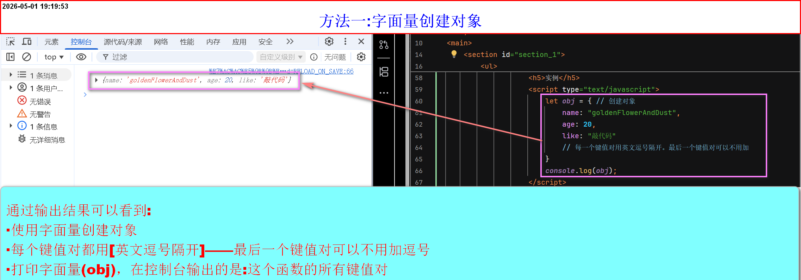
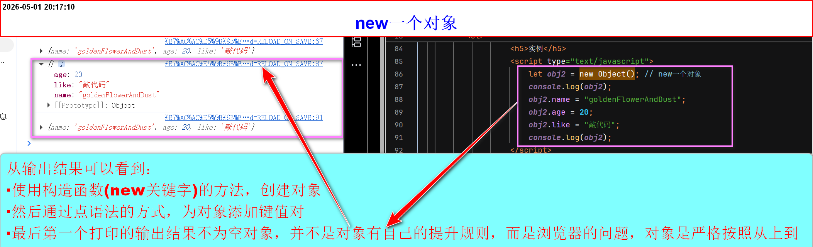
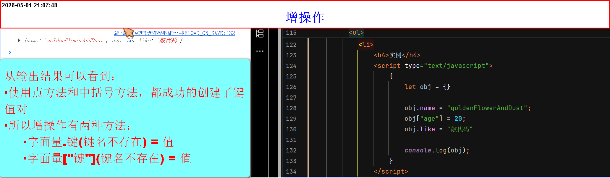
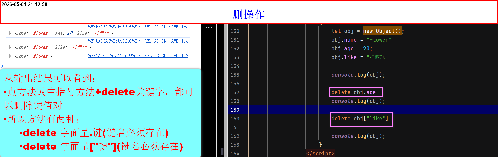
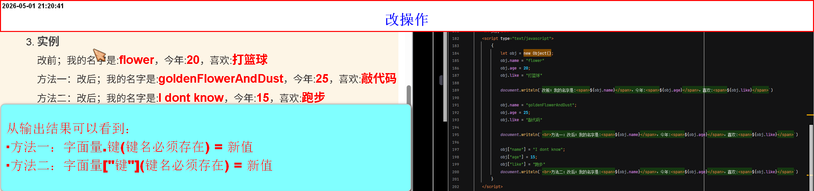
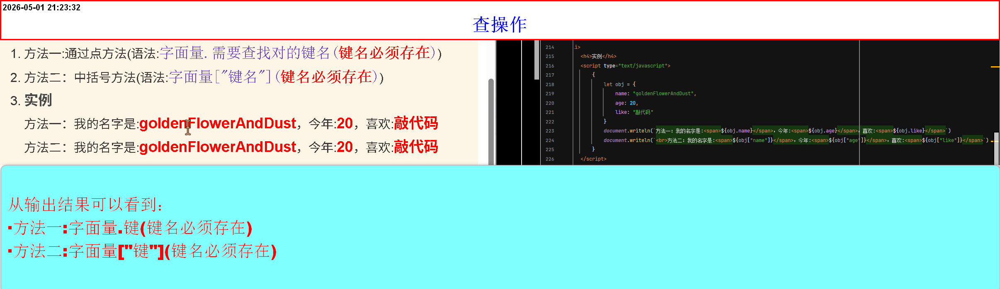
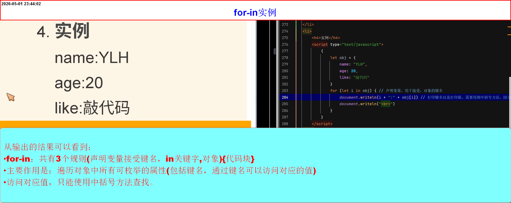

对象数据类型_基本操作以及对象的遍历
对象数据类型
关于点语法与中括号语法- 对象是一个复杂数据类型
- 它是存储一些基本数据类型的集合
-
如:
var obj = {
num:100, key : value——也有一个通用的称呼【键值对】
str:"hello JavaScript",
boo: true
} -
注意：这里的
{}和函数中的{}不一样- 函数里面是写代码
- 对象里面是写一些数据的
-
对象就是一个键值对的集合
{}里面的每一个键都是一个成员- 可以把一些数据放在一个对象里面，它们互不干扰
-
创建对象
-
第一种方法(字面量的方式创建一个对象)
- 字面量创建对象
- 语法:
(var(let、const) 声明变量 = {键 : 值}) - 数据存储在
{}内 - 每一个
键值对用[英文逗号隔开]——推荐一个键值对占一行 - 键的命名规则与声明变量类似(不能以:数字开头、中文、其他非(_、$)的字符，但是:当使用双引号包裹，可以写成任意形式，但是不推荐)
- 值可以是:任意数据类型、函数、数组包裹内嵌对象
- 直接打印字面量，结果是显示所有键值对
-
实例

-
方法二(通过内置构造函数的方法)
- 通过内置构造函数的方法
- 语法:
var(let、const) 字面量 = new Object() - 其中 object() 应该首字母大写为 Object()，因为 Object 是 JavaScript 内置的构造函数
- 它不是在括号内，写入键值对，而是通过[
字面量.键 = 值]的方式，挨个引入键值对 -
实例

-
注意点:
- 对象没有自己的提升规则，它是严格按照代码从上到下执行
- 若在开发者工具看到类似提升的问题，是浏览器开发者工具自己的问题
- 当值是字符串时，必须打双引号。值可以是任何数据
- 键：键的命名规则通常与变量名类似（建议使用字母、数字、下划线、美元符号，数字不能开头），但键名也可以是任意字符串（包括中文），用引号包裹即可
- 尽量用字面量的方法创建对象，两种方法都可以通过[.]的方法做到增改。
-
对象数据类型的基本操作
- 主要的基本操作就是:增、删、改、查四个操作
-
增操作
- 方法一：点语法(语法:
字面量.键 = 值) - 方法二：中括号语法(语法:
字面量["键名"] = 值) -
实例

- 方法一：点语法(语法:
-
删操作
- 通过delete关键字+点的方法(语法:
delete 空格 字面量.需要删除的键(键名必须存在)) - 方法二：delete关键字+中括号语法(语法:
delete 空格 字面量["键名"](键名必须存在)) -
实例

- 通过delete关键字+点的方法(语法:
-
改操作
- 方法一：通过点语法(语法:
字面量.需要更改的键名(键名必须存在，不然就是增操作) = 新值) - 方法二：中括号语法(语法:
字面量["键名"](键名必须存在，不然就是增操作) = 值) -
实例

- 方法一：通过点语法(语法:
-
查操作
- 方法一:通过点语法(语法:
字面量.需要查找对的键名(键名必须存在)) - 方法二：中括号语法(语法:
字面量["键名"](键名必须存在)) -
实例

- 方法一:通过点语法(语法:
-
注意：
- 模板字符串无法，打印整个对象(因为会将对象隐式转换为
toString(),所以最后的输出结果：[object Object])、document.writeln....都是 - 正常情况，用点语法，高效且便于理解
- 当键名是：表达式的时候，只能用中括号的办法，因为点语法，不能用表达式
-
调动整个对象的方法
- console.log(字面量)
- JSON.stringify(字面量)[改方法主要是：将对象转为字符串后再输出]
- 或者手动拼接属性值
- 模板字符串无法，打印整个对象(因为会将对象隐式转换为
对象数据类型的遍历
-
方法一：for-in{}
- 语法:
for (let(var、const) 键名 in 对象) { 循环体 } - 主要作用是：遍历对象中所有可枚举的属性(包括键名，通过键名可以访问对应的值)
-
注意：
- 遍历的循序不保证与定义顺序一致
- 推荐使用中括号语法执行查询操作
- 它不仅会遍历对象自身的属性，还会遍历原型链上的可枚举属性。如果不希望包含原型链属性，可以在循环内部添加
if (对象.hasOwnProperty(键名))进行过滤。 - 循环变量 键名 是一个字符串，表示当前属性的名称
- 适用场景：普通对象的遍历。对于数组，不建议使用 for...in（会遍历出非数字属性），应使用 for、for...of 或 forEach
-
实例

- 语法:
点语法与中括号语法
-
点语法（obj.key）
- 要求：key 必须是合法的标识符（不能以数字开头、不能包含特殊字符等）
- 行为：如果对象中存在该属性，则返回对应的值；如果不存在，则返回 undefined，不会报错。（只有当你试图访问 undefined 的属性时，比如 obj.key.subkey，才会报错 TypeError。）
- 点语法的键名不能是变量
-
中括号语法（obj["key"]）
- 作用：同样用于访问属性值，但括号内可以是任何字符串表达式，包括变量、字符串拼接、甚至数字（会被转为字符串）。
- 可以处理动态键名、包含特殊字符的键名（如 "my-key"）。
- 与点语法一样，如果属性不存在返回 undefined，不会报错。
-
总结：
- 两种语法都能访问或修改属性值，不会因为属性不存在而报错（仅返回 undefined）
- 报错通常发生在你试图对 undefined 进行进一步操作（如调用方法、读取属性）时。
- 点语法更简洁，但要求键名合法；中括号语法更灵活，能处理表达式和特殊键名。
- 类比:点语法是“死脑筋”，只看字面量名；中括号语法是“活脑筋”，会先计算表达式的值，再用结果作为键名。